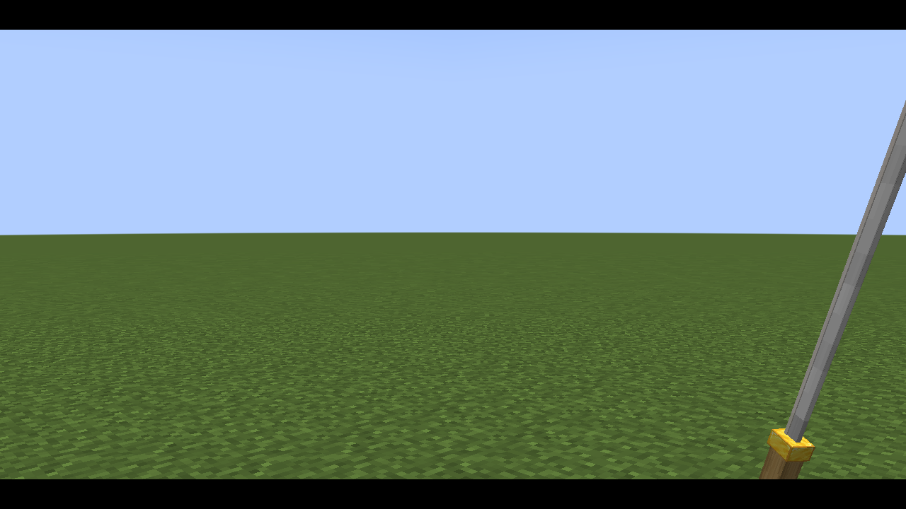
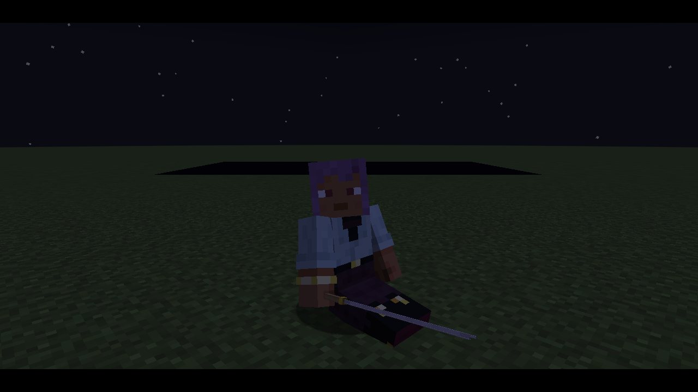
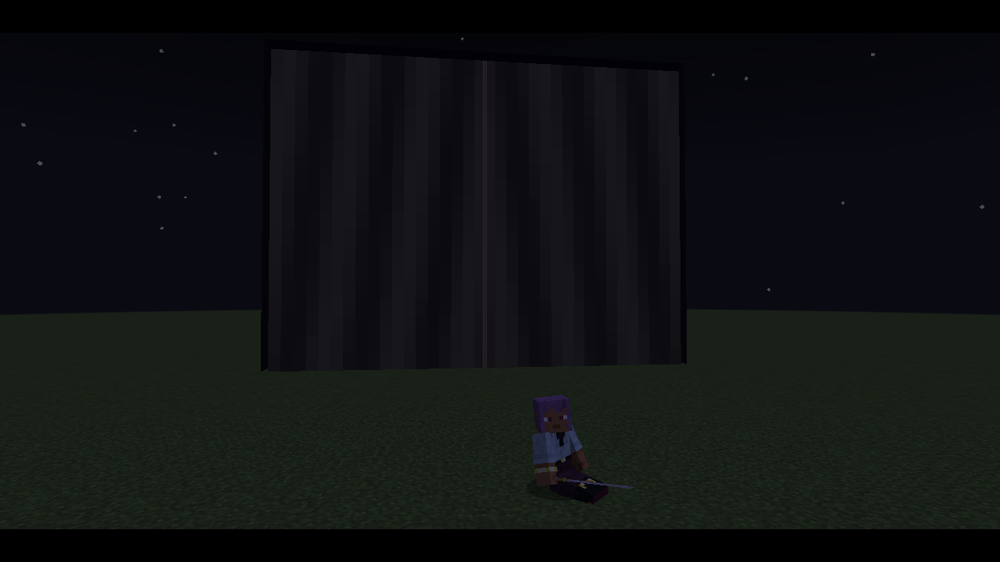
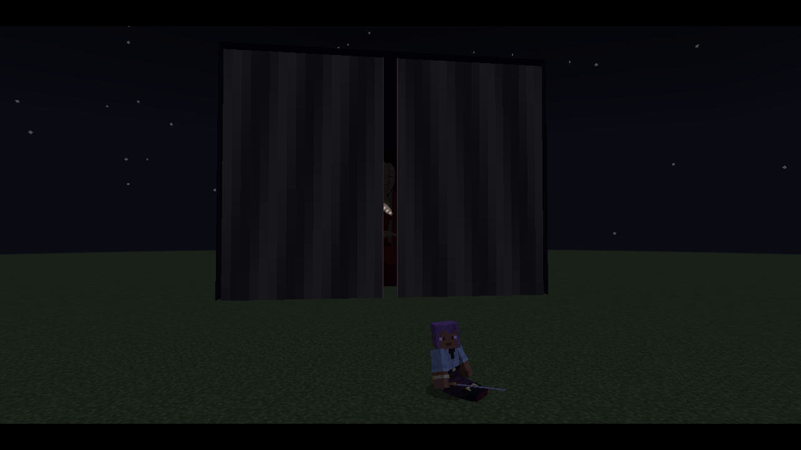
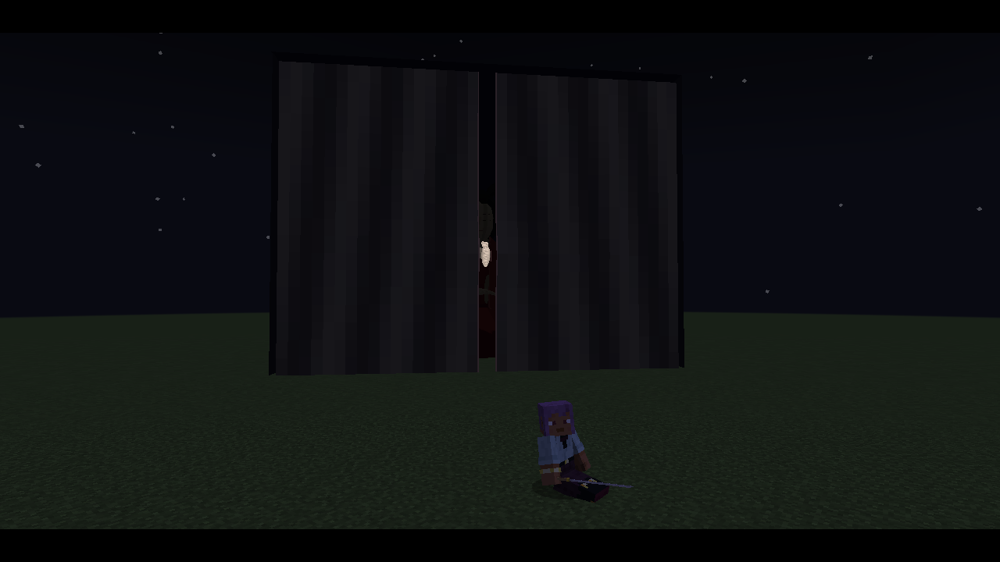
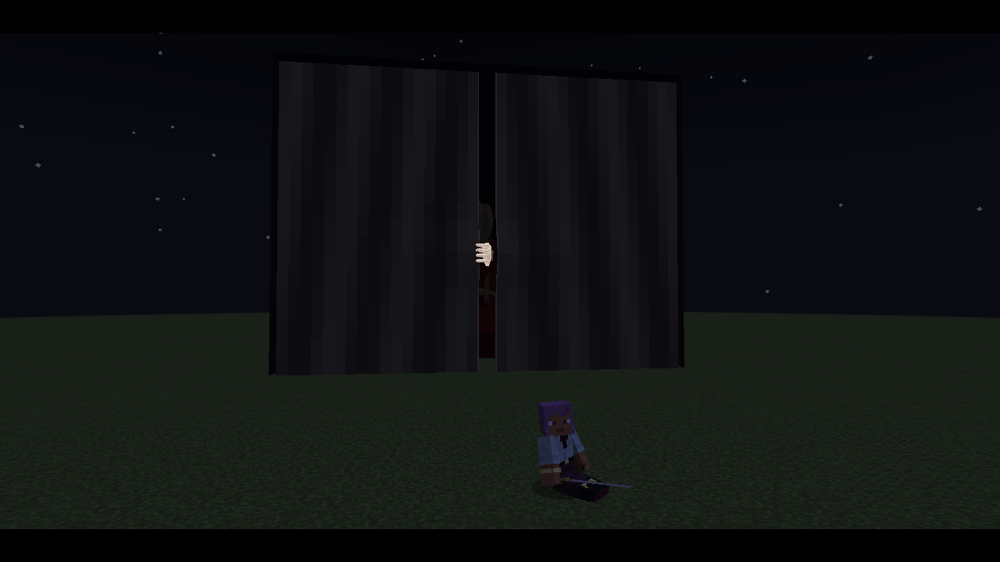
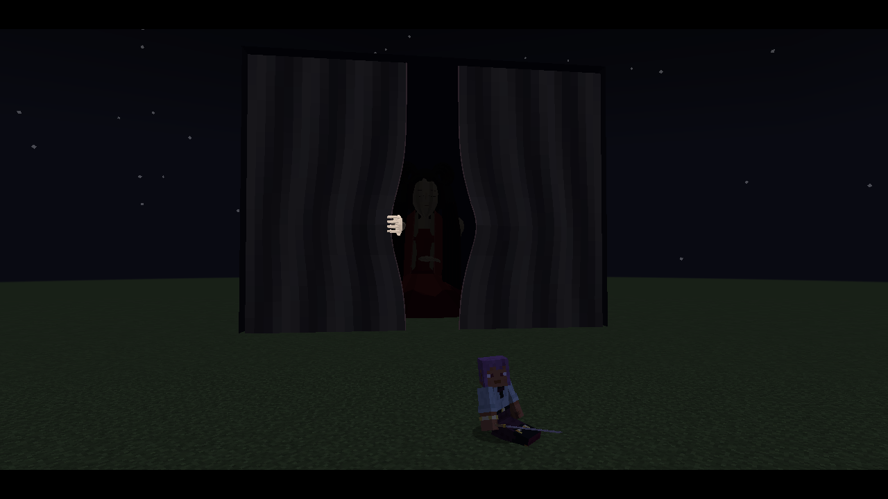
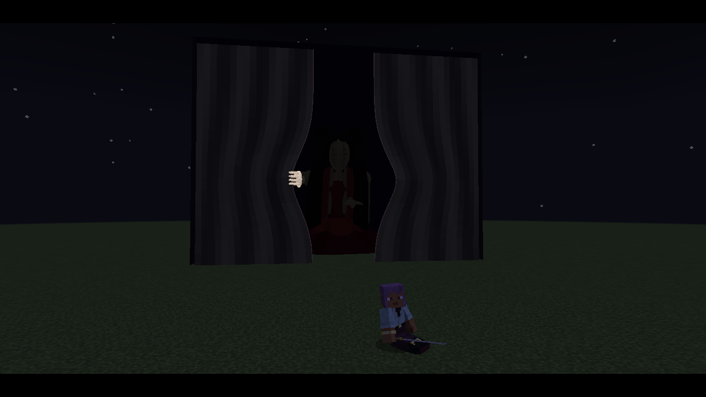
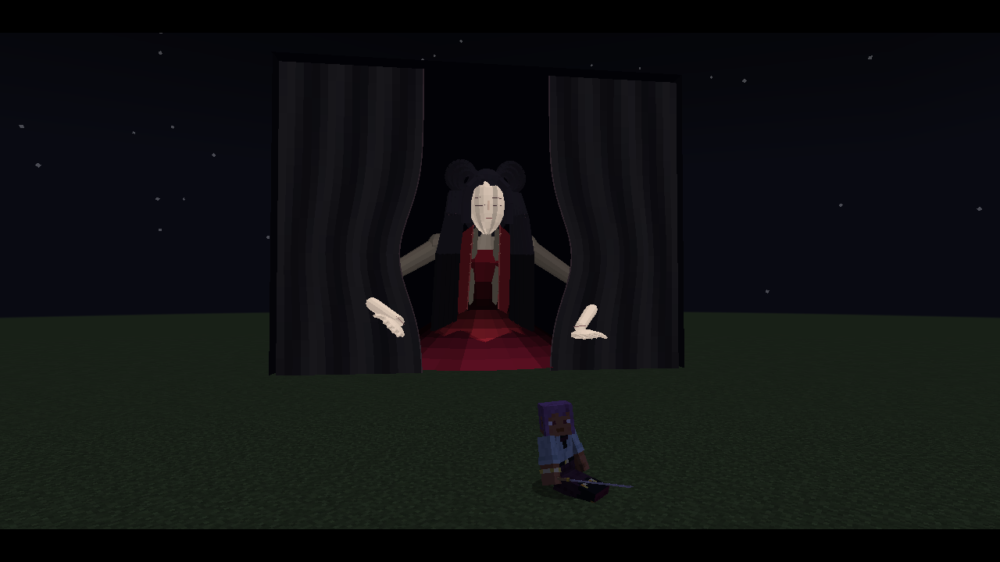
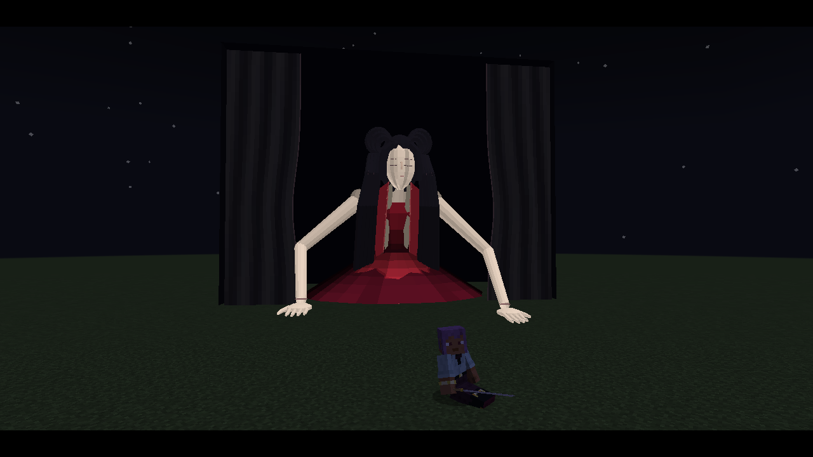
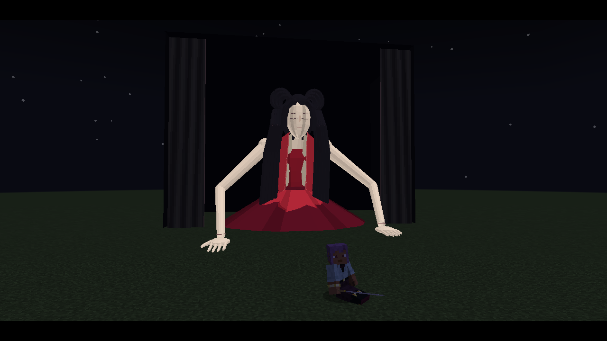
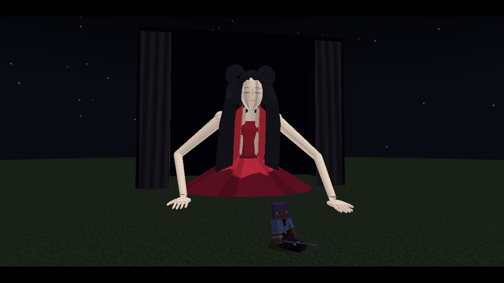
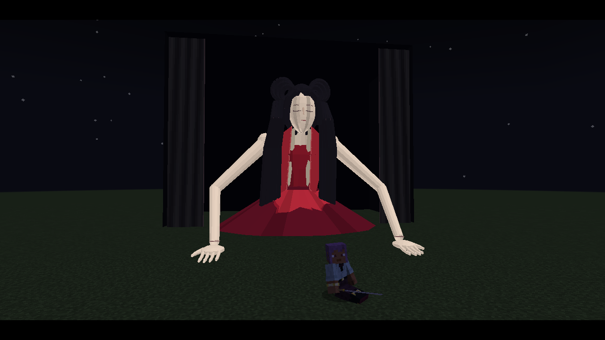
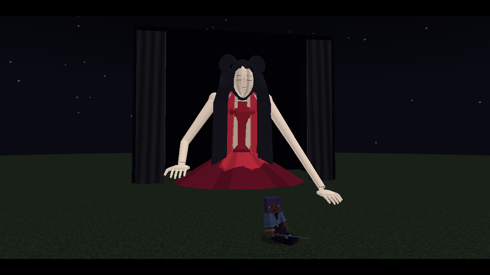
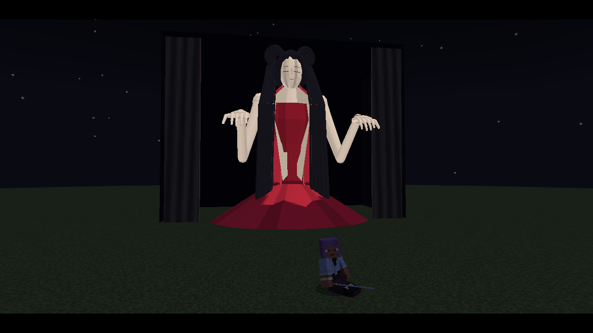
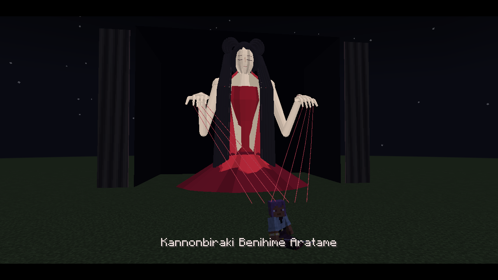
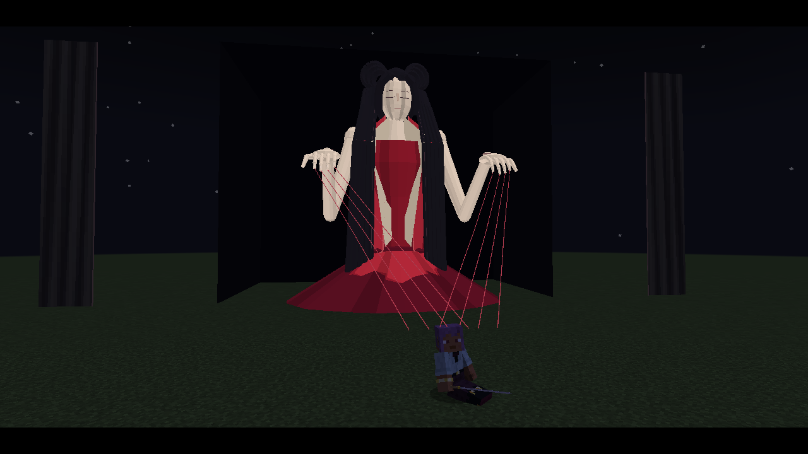
Originais PNG copiados sem alterações. Aprovação visual pendente. A procedência foi conferida nos metadados locais; não é uma certificação criptográfica.
O vídeo opcional é uma sequência de capturas com os intervalos reais de wallMs, incluindo pausas. Não interpola movimentos nem comprova a fluidez de todos os quadros renderizados.
Manifesto e hashes · Metadados originais
















